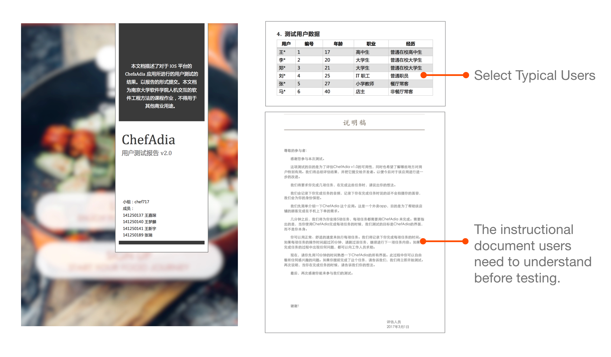
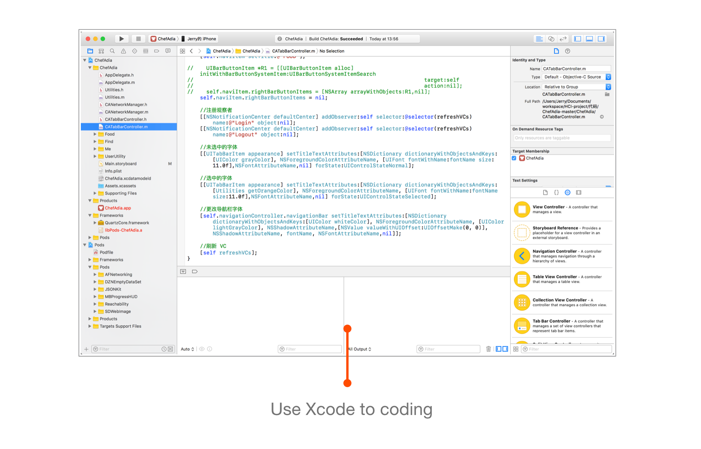

APP UX Redesign — ChefAdia
Project Introduction
ChefAdia is an IOS APP developed for ChefAdia Chinese restaurant, providing customers with online ordering and takeout services. In the application, users can view all the dishes in the restaurant or customize their own salad platters, choose their food, place orders, and make payments using Apple Pay or VISA credit cards.
Target Users
The target users are individuals who wish to order takeout from ChefAdia Chinese restaurant. Geographically, users should be located near the restaurant and possess certain demographic characteristics.
My Contributions
As the team leader for the entire project, I participated in all phases of design and development. I was primarily responsible for heuristic evaluations in the initial stages, single-handedly completed the visual and interactive prototype production in the middle stages, and took charge of developing and debugging code for certain interfaces in the later stages. I also handled the post-production editing of the final showcase video.
Project Background
The ChefAdia project involved outsourcing for a business project catering to American restaurants, with a team of three people. When I joined, the project already had its first version of design, and our goal was to undergo a redesign from an interaction design perspective to enhance the product's user experience. Our redesign efforts focused on visual design and process optimization.
Design Process
1. Heuristic Evaluation
Using Nielsen's ten heuristic principles, we conducted a heuristic evaluation of the first version design, identifying issues in the initial design to serve as the primary guidance for optimization.
2. User Testing
We selected six representative users for usability testing. Through data collection and analysis, we further identified usability issues in the initial design, using the insights gained as secondary guidance for the redesign. The user testing aimed to refine the user experience and address any issues that emerged during the testing phase.

3. Prototype Redesign
Utilizing Sketch as the interface design tool and Flinto as the interactive prototype design tool, we conducted a second round of visual and interactive redesign based on the evaluation and testing results. This phase focused on refining the user interface and interaction elements to address identified issues and enhance the overall user experience.
4. Development Optimization
Building upon the modified prototype design, we proceeded with the product development using Xcode, aiming to maximize the realization of the prototype design and optimize the user experience. This phase involved coding, testing, and refining the application to ensure a seamless and user-friendly final product.

Interface Design Showcase
The interface design adopts a vibrant and appetizing red as the primary color tone, incorporating gradient colors and geometric patterns in alignment with current UI design trends. The consistent styling of buttons and icon conventions enhances the ease of product expansion and development. The homepage categories have been transformed into two columns, making more efficient use of space. The interaction flow has been simplified to make operations more straightforward and comprehensible. This design approach not only evokes a sense of appetite and energy but also aligns with contemporary UI design trends for a visually appealing and user-friendly.
Presentation of Scenarios
As a course assignment for Human-Computer Interaction, we ultimately showcased the application through videos. We selected several usage scenarios and filmed brief demonstration videos for each.